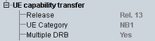

General UE Capability Information
The UE capability information in this section and the following sections is received after authentication. It is sent by the UE in the information element "UE-Capability-NB".
At the highest level, the information element lists the following information.

General UE capabilities
Supported access stratum release.
Remote command:The UE category for NB-IoT is a combined uplink and downlink category. The meaning of the category values is defined in 3GPP TS 36.306.
Remote command:Support of multiple data radio bearers.
Remote command: